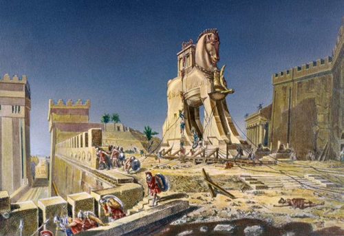

Odysseus is a legendary Greek king of Ithaca and the hero of the poem. Odysseus also plays a key role in Homer's Iliad and other works in that same epic cycle. His father is Laërtes and his mother is Anticlea. He has a wife Penelope and two sons Telemachus and Acusilaus. Odysseus is famous for his intellectual brilliance which helped him in many different situations he needed to face, guile, and versatility. He is also known by the epithet Odysseus the Cunning (cunning intelligence).
In Greek the name was used in various versions.There are two groups of Olyseus (Ὀλυσεύς), Olysseus (Ὀλυσσεύς) or Ōlysseus (Ὠλυσσεύς), and Olyteus (Ὀλυτεύς) or Olytteus (Ὀλυττεύς). In Latin the hero was known as Ulixēs or Ulyssēs. The etymology of the name is unknown. Ancient authors referred the name to the Greek verbs odussomai (ὀδύσσομαι) “to be wroth against, to hate”, to oduromai (ὀδύρομαι) “to lament, bewail”, or even to ollumi (ὄλλυμι) “to perish, to be lost”. In Book 19 of the Odyssey, where Odysseus' early childhood is recounted, Euryclea asks the boy's grandfather Autolycus to name him. Euryclea seems to suggest a name like Polyaretos, "for he has much been prayed for" (πολυάρητος) but Autolycus "apparently in a sardonic mood" decided to give the child another name commemorative of "his own experience in life": "Since I have been angered (ὀδυσσάμενος odyssamenos) with many, both men and women, let the name of the child be Odysseus". Odysseus often receives the patronymic (from his father) epithet Laertiades (Λαερτιάδης), "son of Laërtes". In the Iliad and Odyssey there are several further epithets used to describe Odysseus. It has also been suggested that the name is of non-Greek origin. Robert S. P. Beekes suggested that the name has a Pre-Greek origin.
Odysseus is one of the most influential Greek champions during the Trojan War. Along with Nestor and Idomeneus he is one of the most trusted counsellors and advisors. He played a significant role in the Trojan War, we all remember the story of Trojan Horse. He was Odysseus's idea to build a gigantic horse made of wood and to hide inside its belly the ten of the strongest Achaean soldiers with the porpuse of fool the trojan soldier while they were sleeping after a huge bunquet. The Horse was supposed to be a gift for the Trojans but it turned out to be a trap which made Troy fall.